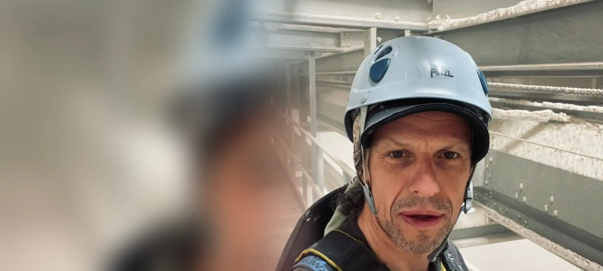

Dachy hal
Płaskie dachy o dużej powierzchni.
- odśnieżanie dachów
- mycie dachów i świetlików
- czyszczenie rynien i wpustów
- przeglądy pokrycia

Myjemy dachy i świetliki, odśnieżamy dachy hal, odkurzamy konstrukcje pod stropem, naprawiamy rynny i obróbki. Pracujemy na linach, bez zatrzymywania pracy obiektu i bez podnośnika na posadzce.
Duże powierzchnie, wysokie stropy i praca, której nie można zatrzymać. Tak to rozwiązujemy.
Obsługujemy magazyny, centra logistyczne, hale produkcyjne i obiekty wielkopowierzchniowe.
Płaskie dachy o dużej powierzchni.
Prace pod stropem, gdzie podnośnik nie dojedzie.
Usuwamy przecieki i usterki, zanim zatrzymają pracę.
Elementy na elewacjach, dachach i pod stropem.
Hale i magazyny w Trójmieście i okolicach.
Duże dachy płaskie, świetliki i rynny, które wymagają regularnego serwisu.
Gdańsk · Gdynia · Pruszcz Gdański · Rumia
Konstrukcje pod stropem i instalacje, przy których liczy się brak przestojów.
Gdynia · Gdańsk · Reda · Wejherowo
Hale sportowe, markety i obiekty handlowe.
Trójmiasto i okolice
Okolice: dojeżdżamy do hal i zakładów w Rumi, Redzie, Wejherowie i Pruszczu Gdańskim. Budynki biurowe i usługowe: usługi wysokościowe dla biurowców.


Pracowaliśmy przy turbinach wiatrowych onshore i offshore, na platformach i konstrukcjach stalowych. Te same procedury bezpieczeństwa stosujemy w halach i magazynach w Trójmieście.
Gdy ilość śniegu zbliża się do obciążenia przyjętego w projekcie dachu, po intensywnych opadach mokrego śniegu i przy zatorach lodowych w rynnach. Za bezpieczne użytkowanie obiektu przy opadach śniegu odpowiada właściciel lub zarządca (art. 61 Prawa budowlanego).
Nie. Pracujemy na linach z dachu lub konstrukcji, bez podnośnika na posadzce. Strefę pod miejscem pracy wydzielamy tylko na czas prac.
Z dachu, w asekuracji linowej, bez stawania na przeszkleniach. Używamy środków bezpiecznych dla poliwęglanu i szkła. Czyste świetliki wpuszczają do hali więcej światła dziennego.
Tak. Czyścimy belki, kratownice, kanały i instalacje pod stropem, np. przed audytem, zmianą najemcy albo w zakładach, w których czystość konstrukcji ma znaczenie dla produkcji.
Tak. Dojeżdżamy do hal i magazynów w Rumi, Redzie, Wejherowie, Pruszczu Gdańskim i w innych miejscowościach województwa pomorskiego.
Tak. W umowie serwisowej ustalamy harmonogram: odśnieżanie w sezonie, mycie świetlików, przeglądy dachu i czyszczenie rynien. Obiekty z umową mają pierwszeństwo przy nagłych interwencjach.
Poradniki dla zarządców: sople i śnieg na dachu: kto odpowiada, przegląd roczny i pięcioletni budynku, alpinista, podnośnik czy rusztowanie. Więcej na blogu.
Wyślij zdjęcia i adres obiektu. Przygotujemy bezpłatną wycenę, zwykle tego samego dnia roboczego.